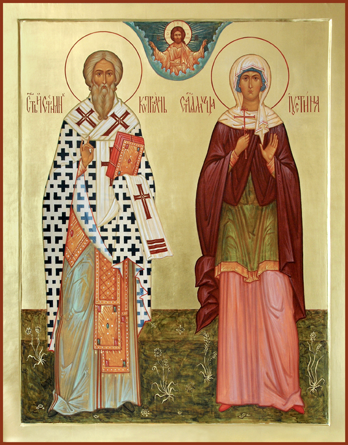

Глас 4
Ирмос: Мо́ря чермну́ю пучи́ну/ невла́жными стопа́ми/ древний пешеше́ствовав Изра́иль,/ крестообра́зныма Моисе́овыма рука́ма/ Амали́кову силу в пустыни победи́л есть.
Припев: Священному́чениче Киприа́не и му́ченице Иусти́но, моли́те Бо́га о на́с.
С Преми́рными чи́нми ныне водворя́яся, о свяще́нная и Божественная главо́,/ с Небесе́ при́зри на благоче́стно пою́щия тя/ и твоими молитвами сохраня́й.
Припев: Священному́чениче Киприа́не и му́ченице Иусти́но, моли́те Бо́га о на́с.
Во мра́це неве́дения, преподо́бне, лю́те одержи́м/ и душегу́бными страстьми́ пло́ти невоздержа́нием ты разжига́ем,/ преложе́ние пресла́вно обрел еси внеза́пу, всеблаженне.
Сла́ва Отцу́ и Сы́ну и Свято́му Ду́ху.
Губи́телей убо на седа́лищи прежде, отче, седе́л еси/ и на седа́лищи пресви́теров паки Христа прославил еси,/ измени́вся явле́нно Влады́чнею Боже́ственною благодатию.
И ны́не и при́сно и во ве́ки веко́в. Ами́нь.
Богородичен: Дева по рождестве пребыла́ еси:/ Сама́го бо ро́ждши Творца всех и Господа,/ необычно и странно нам я́вльшася те́лом,/ Богородительнице Мати Присноде́во.
Ирмос: Веселя́тся о Тебе Церковь Твоя, Христе́, зову́щи:/ Ты моя кре́пость, Господи,/ и прибе́жище, и утвержде́ние.
Припев: Священному́чениче Киприа́не и му́ченице Иусти́но, моли́те Бо́га о на́с.
Яко Павел, ко Христу душе́вную любовь преложи́в, Киприане всему́дре,/ того ученик был еси.
Припев: Священному́чениче Киприа́не и му́ченице Иусти́но, моли́те Бо́га о на́с.
Обруча́ет ти Христос,/ вместо риз стра́стных одея́ние славы да́руя и возрождения одежду.
Сла́ва Отцу́ и Сы́ну и Свято́му Ду́ху.
Поу́стник по́стнический прежде бы́вый терпели́в,/ по́слежде, Киприа́не всехва́льне,/ свидетель Истины был еси.
И ны́не и при́сно и во ве́ки веко́в. Ами́нь.
Богородичен: Госпо́дьственно и истинно Тя, Богородицу, вернии почита́ем,/ Ты бо Бога родила́ еси, плоть бывша, Всенепорочная.
Нака́зан в пре́лести приле́жно,/ яко Павел, зван быст с Небесе́,/ Крестом наставля́емь к свету знания,/ честны́я бо девы любо́вию разжигаемь,/ тоя́ ради сочета́лся еси Зижди́телю человеков./ Тем обличи́в не́мощь вражию,/ с нею сподо́бился еси ли́ку мучеников,/ Киприа́не, архиере́ев удобре́ние,/ моли́ Христа Бога грехов оставле́ние пода́ти/ честву́ющим любовию святую память твою.
Сла́ва Отцу́ и Сы́ну и Свято́му Ду́ху, и ны́не и при́сно и во ве́ки веко́в. Ами́нь.
Богородичен: В напа́сти многоплете́нныя впад/ от враг видимых и невидимых,/ бурею одержи́м безчисленных согрешений моих,/ и, яко к теплому заступлению и покро́ву моему, Чистая,/ ко приста́нищу притека́ю Твоея́ бла́гости./ Темже, Пречистая, из Тебе Воплоще́нному без Се́мене/ моли́ся приле́жно о всех рабе́х Твоих,/ непреста́нно молящихтися, Богородице Пречистая,/ моля́щи Его при́сно согреше́ний оставле́ние дарова́ти/ воспева́ющим досто́йно славу Твою.
Ирмос: Вознесе́на Тя ви́девши Церковь на Кресте́,/ Солнце праведное,/ ста́ в чине своем,/ достойно взыва́ющи:/ слава силе Твоей, Господи.
Припев: Священному́чениче Киприа́не и му́ченице Иусти́но, моли́те Бо́га о на́с.
Возбну́в, Богогла́се, от неи́стовства перваго,/ демонскую лесть и душетле́нную пре́лесть всю обличил еси и, радуяся, взывал еси:/ слава силе Твоей, Господи.
Припев: Священному́чениче Киприа́не и му́ченице Иусти́но, моли́те Бо́га о на́с.
До́блественно Иустина укрепля́ема/ и Чистую Деву и Обрадованную зело́ моля́щи,/ се́тей избеже́ и ко́зней же вражиих.
Сла́ва Отцу́ и Сы́ну и Свято́му Ду́ху.
Укрепляема верою твоего Жениха/ и Крестною силою оде́яна,/ де́моны нея́тна, вопиющи, пребыла́ еси:/ слава силе Твоей, Господи.
И ны́не и при́сно и во ве́ки веко́в. Ами́нь.
Богородичен: Иже естеством свободен Сый,/ о́бразом раба обнища́ богатством благости, Мати Присноде́во,/ из Тебе по Ипостаси все приемь человечество.
Ирмос: Ты, Господи, мой свет/ в мир пришел еси,/ Свет Святый, обращаяй из мра́чна неве́дения/ верою воспевающия Тя.
Припев: Священному́чениче Киприа́не и му́ченице Иусти́но, моли́те Бо́га о на́с.
Побо́рницу имущи я́ве Чистую Богоматерь, обога́щшися, Иустино,/ честно́е де́вство сохранила еси невре́дно.
Припев: Священному́чениче Киприа́не и му́ченице Иусти́но, моли́те Бо́га о на́с.
Одушевле́нный Христов и красне́йший образ, почти́м Иустину,/ сокровенную добро́ту и некра́домое возложе́ние.
Сла́ва Отцу́ и Сы́ну и Свято́му Ду́ху.
Невеста Христова при́сная и нескве́рная,/ страданием и поще́нием восприе́мши, пра́ведно сугу́б венец носит.
И ны́не и при́сно и во ве́ки веко́в. Ами́нь.
Богородичен: Ум Ангельский и человеческий не может сказати/ неизреченнаго и преславнаго чудесе Рождества Твоего,/ Всечистая.
Ирмос: Пожру́ Ти со гла́сом хваления, Господи,/ Церковь вопие́т Ти,/ от бесо́вския кро́ве очищшися,/ ради милости от ребр Твоих/ исте́кшею Кровию.
Припев: Священному́чениче Киприа́не и му́ченице Иусти́но, моли́те Бо́га о на́с.
Зло́бы дна преиспо́дняго дошел еси,/ к кра́йнейшей же паки добродетели, отче,/ возшел еси на высоту,/ преславно измени́вся Божественным Крещением.
Припев: Священному́чениче Киприа́не и му́ченице Иусти́но, моли́те Бо́га о на́с.
Был еси служитель де́монов пе́рвее,/ но Христов Богоявле́нный ученик показался еси,/ присною любовию желание возлюбив последнее.
Сла́ва Отцу́ и Сы́ну и Свято́му Ду́ху.
Многия ты Влады́це привел еси му́ченики,/ ку́плей величайшую являя,/ кровию малейшею Царство Небесное, Богому́дре, купи́ти.
И ны́не и при́сно и во ве́ки веко́в. Ами́нь.
Богородичен: Расто́ргни моя плени́цы согрешений, Богоневе́сто, греховнаго закона,/ Жизни законом свободу да́рующи,/ Владыку закона рождшая.
От худо́жества волше́бнаго обратился, Богомудре,/ к познанию Божественному,/ показался еси миру врач мудре́йший,/ исцеления да́руя честву́ющим тя, Киприане со Иустиною:/ с неюже молися Человеколюбцу Влады́це/ спасти ду́ши наша.
Целе́ний твоих, свя́те, дарования мне низпослав,/ и неду́гующее мое сердце гно́ем греховным/ молитвами твоими исцели,/ яко да слово пения от скверных усте́н моих ныне принесу ти/ и воспою болезни твоя, яже показал еси, священномучениче,/ покая́нием добрым и блаженным и Богу приближающимся./ Того бо удержа́н рукою,/ направился еси, яко по лествице, к Небесным,/ непрестанно моляся спасти ду́ши наша.
Ирмос: Спасы́й во огни́ Авраа́мския Твоя о́троки/ и, халде́и убив,/ яже правда праведно уловля́ше,/ препетый Господи,/ Боже отец наших, благословен еси.
Припев: Священному́чениче Киприа́не и му́ченице Иусти́но, моли́те Бо́га о на́с.
На священнонача́льство вшед,/ священнейший образ священнонача́льником себе и правило явил еси, взыва́я:/ препе́тый Господи, Боже отец наших, благослове́н еси.
Припев: Священному́чениче Киприа́не и му́ченице Иусти́но, моли́те Бо́га о на́с.
Живонача́льныя тебе десни́цы истинно изменение, отче, нашедшее,/ му́дра тя сотвори Боговеща́теля, поюща:/ препе́тый Господи, Боже отец наших, благословен еси.
Сла́ва Отцу́ и Сы́ну и Свято́му Ду́ху.
Ору́жие непобедимое нам на противнаго, блаженне, ты явился еси,/ того облича́я ле́сти, пою́щим:/ препе́тый Господи, Боже отец наших, благослове́н еси.
И ны́не и при́сно и во ве́ки веко́в. Ами́нь.
Богородичен: Небе́снии ли́цы и Пренебе́снии собо́ри/ песносло́вят из Тебе, Богородице, Рожде́ннаго, зовуще:/ препе́тый Господи, Боже отец наших, благослове́н еси.
Ирмос: Веселися, Иерусалиме, торжествуйте, лю́бящии Сио́на:/ ца́рствуяй бо во веки, Господь Сил прии́де./ Да благогове́ет вся земля от Лица Его/ и да вопие́т:/ благослови́те вся дела Господня Господа.
Припев: Священному́чениче Киприа́не и му́ченице Иусти́но, моли́те Бо́га о на́с.
Премудро е́ллинския мудрости небре́гл еси, сла́вне,/ апостолов же Божественное веща́ние, Духом бряца́емо, отче,/ и о́гненными язы́ки ясно изглаша́емо, вопии́л еси:/ благослови́те вся дела Господня Господа.
Припев: Священному́чениче Киприа́не и му́ченице Иусти́но, моли́те Бо́га о на́с.
Восте́кл еси на высокая и преми́рная све́тло селе́ния,/ Христу кровию, яко же́ртвою непорочною, приносим, отче, заколе́ние живо, приятно и благоугодно, воспевая:/ благослови́те вся дела Господня Господа.
Сла́ва Отцу́ и Сы́ну и Свято́му Ду́ху.
Побежда́еми от в тебе все́льшияся благодати,/ де́монстии полцы́ отгоняются и отбега́ют стра́сти неду́гующих, Богомудре,/ ве́рнии же Божественнаго света насыща́емся, вопию́ще:/ благослови́те вся дела Господня Господа.
И ны́не и при́сно и во ве́ки веко́в. Ами́нь.
Богородичен: Лику́ют со А́нгельскими, Пречистая, силами о Рождестве Твоем, Богомати,/ и Богородицу верою Тя имену́ющии:/ Ты бо Владыку и Изба́вителя нам родила́ еси, Емуже пое́м:/благослови́те вся дела Господня Господа.
Ирмос: Ева убо неду́гом преслуша́ния/ клятву всели́ла есть,/ Ты же, Дево Богородице,/ Прозябе́нием чревоноше́ния ми́рови благослове́ние процвела́ еси,/ тем Тя вси велича́ем.
Припев: Священному́чениче Киприа́не и му́ченице Иусти́но, моли́те Бо́га о на́с.
Свыше нас, благоче́стно поющих тя, назира́еши Божественною благода́тию,/ твоими молитвами, Богоглаго́льниче, и оружием благоволе́ния венчава́я,/ мир и спасение даруй нам, яко священнонача́льник Божественнейший.
Припев: Священному́чениче Киприа́не и му́ченице Иусти́но, моли́те Бо́га о на́с.
Тече́ние исцеле́ний обильно персть твоя лю́бящим тя воздае́т;/ тебе же, Киприа́не, жены́ Богоносны яко Божественно сокровище прие́млют и усе́рдно являют сокрове́ннаго,/ да вси тебе наслади́мся.
Сла́ва Отцу́ и Сы́ну и Свято́му Ду́ху.
Напра́вити наше ко Христу, пребога́те, ше́ствие дея́нием,/ и Богоугодным житие́м, и чисте́йшим очище́нием/ су́що Божию ти́хость умоли, яко иерарх сострада́тельнейший.
И ны́не и при́сно и во ве́ки веко́в. Ами́нь.
Богородичен: Укрепи́ нашу душе́вную не́мощь, Богомати, силою Твоею,/ разреши тяготу́, Пресвятая, налага́емую рабо́м Твоим,/ миру правды Солнце несказа́нно возсия́вшая.
В волхва́х несосужде́нна3 и еди́наго пребо́льша,/ преме́ншаго нрав и попали́вшаго книги, наставля́ющия ко пре́лести,/ и свидетельства венец странноле́пно прие́мшаго,/ Киприа́на похва́лим, страдальцев зерца́ло.
Сла́ва Отцу́ и Сы́ну и Свято́му Ду́ху, и ны́не и при́сно и во ве́ки веко́в. Ами́нь.
Богородичен: Древле божества́ наде́ждею прельсти́вый мя злоко́зненный,/ пло́тным предложе́нием прему́дренно паки прельща́ется от Девы Возсиявшаго;/ и си́це осуждение пло́тное пло́тию разреши́ся,/ смерти умертви́вшейся.